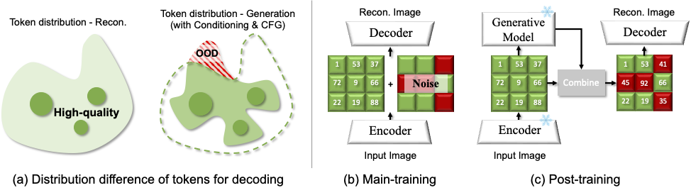
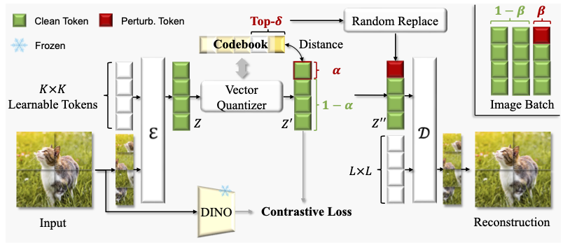
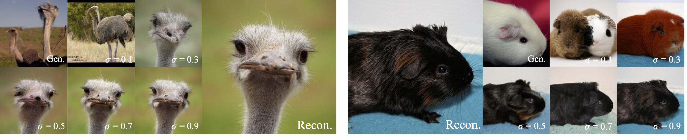
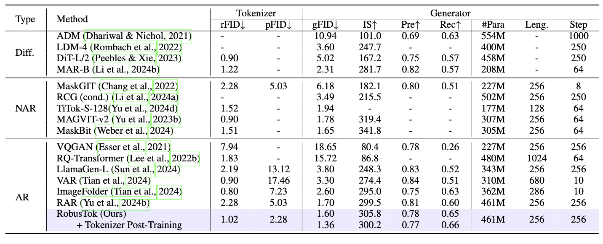
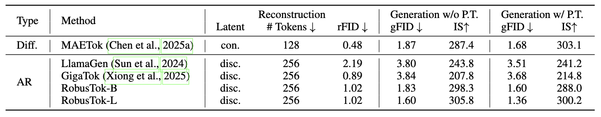
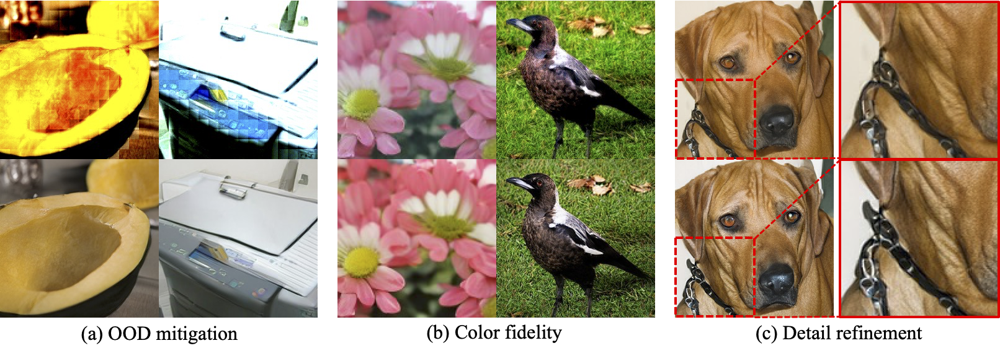
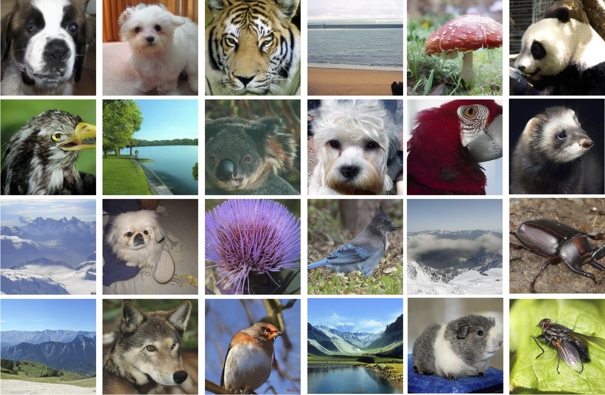

Recent image generative models typically capture the image distribution in a pre-constructed latent space, relying on a frozen image tokenizer. However, there exists a significant discrepancy between the reconstruction and generation distribution, where current tokenizers only prioritize the reconstruction task that happens before generative training without considering the generation errors during sampling. In this paper, we comprehensively analyze the reason for this discrepancy in a discrete latent space, and, from which, we propose a novel tokenizer training scheme including both main-training and post-training, focusing on improving latent space construction and decoding respectively. During the main training, a latent perturbation strategy is proposed to simulate sampling noises, \ie, the unexpected tokens generated in generative inference. Specifically, we propose a plug-and-play tokenizer training scheme, which significantly enhances the robustness of tokenizer, thus boosting the generation quality and convergence speed, and a novel tokenizer evaluation metric, \ie, pFID, which successfully correlates the tokenizer performance to generation quality. During post-training, we further optimize the tokenizer decoder regarding a well-trained generative model to mitigate the distribution difference between generated and reconstructed tokens. With a $\sim$400M generator, a discrete tokenizer trained with our proposed main training achieves a notable 1.60 gFID and further obtains 1.36 gFID with the additional post-training. Further experiments are conducted to broadly validate the effectiveness of our post-training strategy on off-the-shelf discrete and continuous tokenizers, coupled with autoregressive and diffusion-based generators.

During tokenizer training, we apply latent perturbation to enhance its robustness. We apply perturbation after semantic regularization to preserve clear semantics in the discrete tokens to maximize the reconstruction capability. Within a batch of images, we randomly choose β of them to add perturbation. To apply perturbation to each selected image, we randomly choose α×H×W tokens and then calculate the top-δ nearest neighbors to those tokens within the learned codebook. The final perturbation is applied by randomly replacing the original token with one of its top-δ nearest neighbors.

In this stage, we freeze the encoder and quantizer, and fine-tune only the decoder. To stabilize adversarial training, the pretrained discriminator is reused directly and optimization continues with the same loss combination. Inspired by the smooth transition induced by the teacher forcing, we introduce the preservation ratio σ, which interpolates between reconstruction and generation by controlling how much information from the original image is retained in the generated latents. After that, generated images are re-encoded and paired with their corresponding real images, allowing the decoder to learn reconstruction from AR generated latents space.

System-level performance comparison on class-conditional ImageNet 256x256. ↑ and ↓ indicate that higher or lower values are better, respectively.

System-level comparison on class-conditional ImageNet 256 ×256. “con.” / “disc.” denote continuous / discrete latent types. ↑/ ↓indicate higher / lower is better. “P.T.” represents our proposed tokenizer post-training strategy.

Visualization of 256 × 256 image generation before (top) and after (bottom) post-training. Three improvements are observed: (a) OOD mitigation, (b) color fidelity, and (c) detail refinement.

Visualization of 256 × 256 image within ImageNet class by our RobusTok.